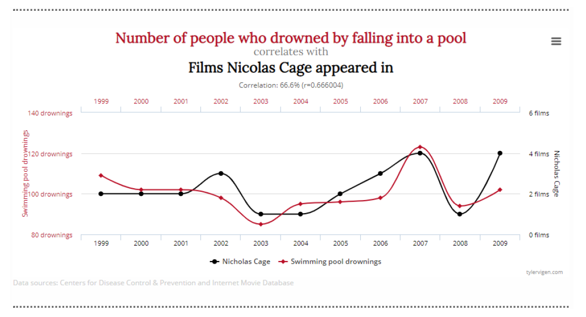
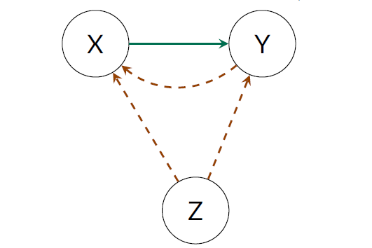
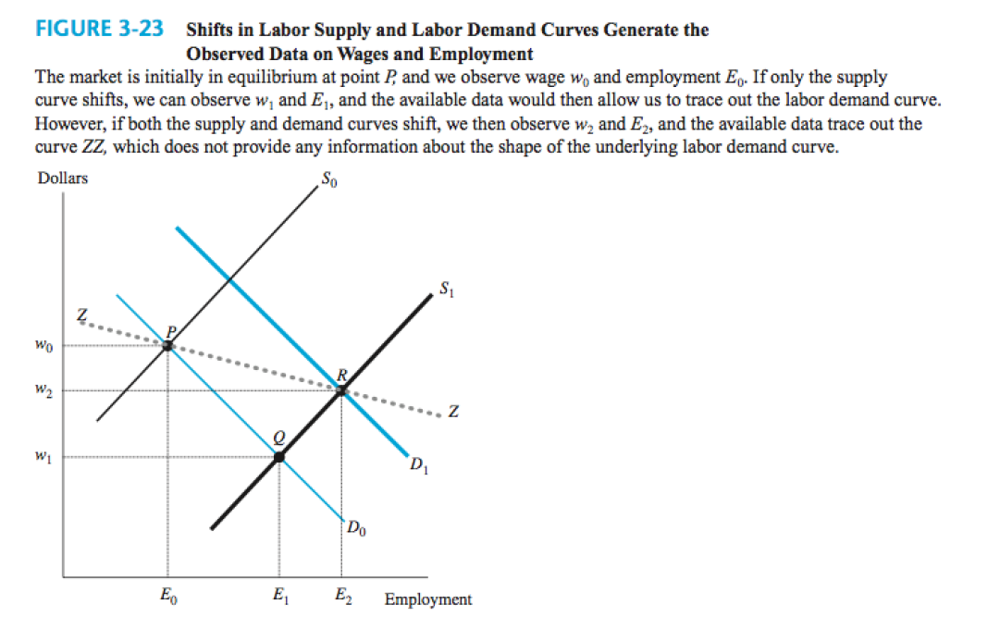
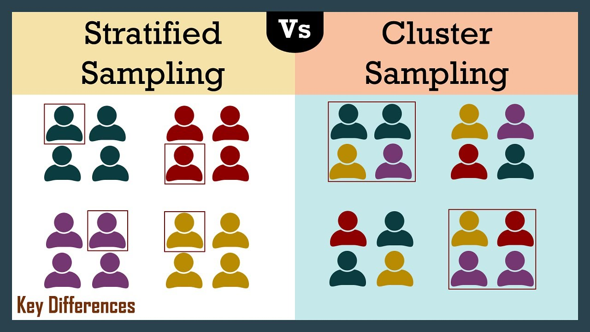
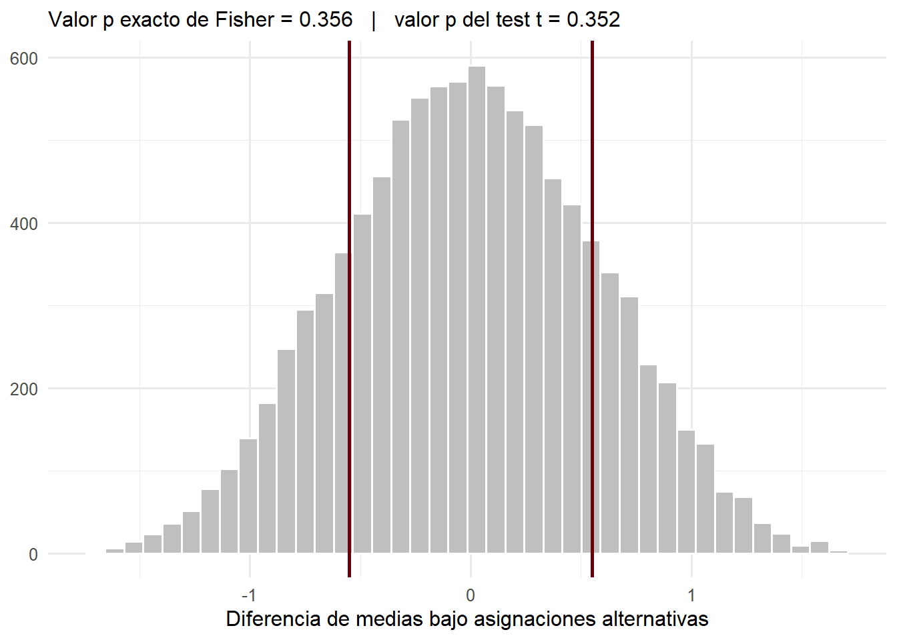
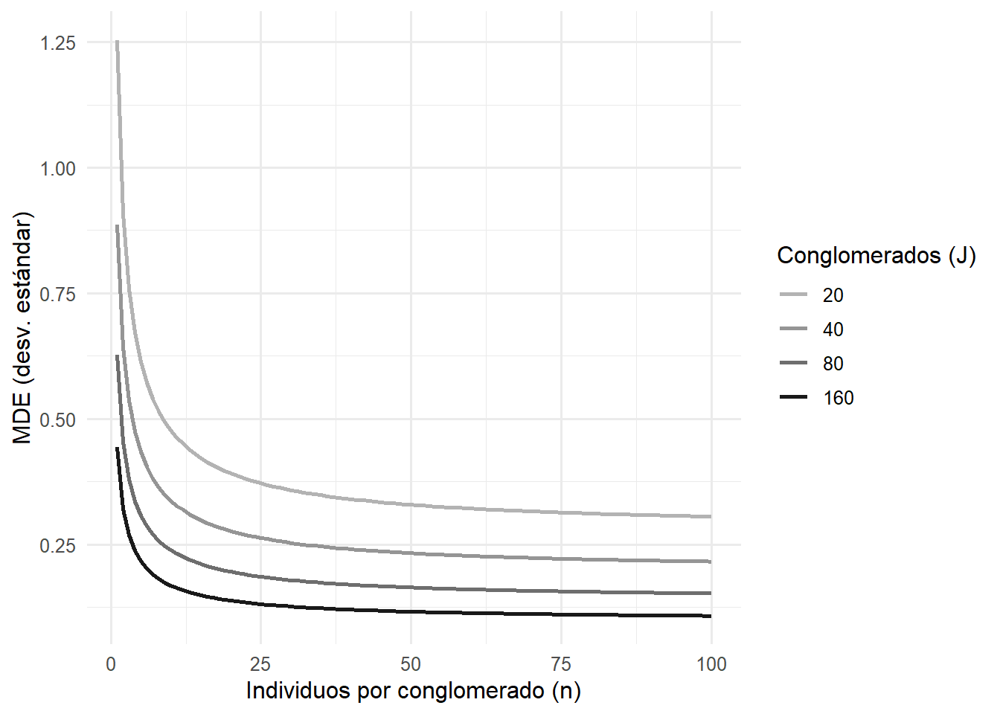

Sesión 1: Causalidad, validez y experimentos aleatorizados
Resultados potenciales, sesgo de selección y análisis de RCT
Introducción
Esta sesión abre el curso con la pregunta que lo recorre entero: cuándo una relación entre dos variables nos dice algo sobre lo que ocurriría si interviniéramos una de ellas. Es decir, cuándo la variación de una variable —e.g. \(X\)—, al relacionarse con otra —e.g. \(Y\)—, afecta a esa otra variable. Para responderla se introduce el marco de resultados potenciales, se formaliza el sesgo de selección y se muestra por qué la asignación aleatoria lo elimina. El resto de la sesión se dedica a lo que ocurre cuando ese ideal se lleva a la práctica: cómo se analiza un experimento con regresión, qué amenazas aparecen en terreno y cómo se hace inferencia y se calcula la potencia de un diseño. La sesión cierra con una aplicación en R sobre un experimento real de educación sexual en Colombia (Chong et al. 2020).
Las lecturas obligatorias son los capítulos 1 a 3 de Mostly Harmless Econometrics (Angrist y Pischke 2009) y las secciones 1 a 6 del manual de Duflo et al. (2007). La clase se apoya, además, en Imbens y Wooldridge (2009), Athey y Imbens (2017) y Krueger (1999).
Angrist y Pischke organizan cualquier proyecto empírico en torno a cuatro preguntas, que conviene tener presentes desde el inicio porque reaparecen en cada sesión del curso:
- ¿Cuál es la relación causal de interés? Una relación causal permite predecir las consecuencias de una intervención, que es lo que se necesita para evaluar una política.
- ¿Cuál es el experimento ideal que permitiría capturar ese efecto? No es necesario que sea factible; muchas veces no lo es por razones éticas o de costo. Su función es disciplinar el razonamiento: obliga a precisar qué se manipula, sobre quién y qué se mantiene constante.
- ¿Cuál es la estrategia de identificación? Es la forma en que se usan datos observacionales para aproximarse a ese experimento.
- ¿Cuál es el modo de inferencia estadística? Esto incluye la población estudiada, la muestra y los supuestos con que se construyen los errores estándar.
La segunda pregunta tiene un corolario útil. Si no es posible describir siquiera un experimento ideal, la pregunta probablemente no tiene respuesta empírica. Es por eso, de hecho, que se le dice experimento ideal, pues además nos entrega un horizonte el cual buscamos “simular” o reproducir en caso de que no podamos aplicar el experimento como tal. Angrist y Pischke (2009) a estas preguntas llaman fundamentally unidentified questions. Su ejemplo es el efecto de la edad de ingreso a la escuela sobre los puntajes en primaria: como la edad de ingreso es igual a la edad actual menos los años de escolaridad, no hay forma de mover una sin mover las otras. La idea de contrastar los experimentos que quisiéramos hacer con los que “la naturaleza” produce por su cuenta es antigua en econometría y se remonta, al menos, a Haavelmo (1944).
1 Causalidad y correlación
Muchas decisiones en economía, tanto en el sector público como en las empresas, dependen de entender cómo se relacionan ciertas variables. A veces se busca contrastar una hipótesis, por ejemplo, si existe discriminación en la asignación de créditos hipotecarios o si hombres y mujeres con la misma educación y experiencia reciben salarios distintos. Otras veces se busca cuantificar un efecto: cuánto mejora el rendimiento escolar al reducir el tamaño de los cursos, o qué le ocurre al desempleo cuando sube el salario mínimo. En ambos casos se necesita un número y una medida de su precisión. Pero antes de eso se necesita saber qué tipo de relación se está midiendo, porque en los datos observacionales una correlación y una relación causal pueden verse exactamente iguales.
El caso extremo son las correlaciones espurias: series que se mueven juntas sin que exista ningún vínculo entre ellas. El sitio de Vigen (s. f.) reúne decenas de ejemplos, como la correlación entre el número de películas en que aparece Nicolas Cage cada año y las muertes por ahogamiento en piscinas en Estados Unidos.
Ese ejemplo es fácil de descartar. Los casos que importan son aquellos en que la correlación sí refleja algo real, pero no lo que se quiere medir. Para pensar en ellos ayuda distinguir tres estructuras posibles entre una variable \(X\) y un resultado \(Y\):
- \(X \rightarrow Y\): \(X\) causa \(Y\). Una política que mueve \(X\) mueve \(Y\).
- \(Z \rightarrow X\) y \(Z \rightarrow Y\): un tercer factor \(Z\) causa ambas. \(X\) e \(Y\) están correlacionadas, pero intervenir \(X\) no cambia \(Y\).
- \(Y \rightarrow X\): la causalidad va en sentido inverso.

En los dos últimos casos la correlación entre \(X\) e \(Y\) dice poco o nada sobre el efecto de cambiar \(X\). El ejemplo con que Angrist y Pischke abren el capítulo 2 muestra lo engañoso que puede ser esto. Usando la National Health Interview Survey de 2005, comparan el estado de salud autorreportado de quienes estuvieron hospitalizados el último año con el de quienes no lo estuvieron.
| Estado de salud según hospitalización, EE. UU. (NHIS 2005) | |||
| Grupo | N | Salud media (1 = excelente, 5 = mala) | Error est. |
|---|---|---|---|
| Hospitalizados | 7.774 | 2.79 | 0.014 |
| No hospitalizados | 90.049 | 2.07 | 0.003 |
| Fuente: Angrist y Pischke (2009, cap. 2). Diferencia: 0,71 (t = 58,9). | |||
Tomada al pie de la letra, la tabla sugiere que ir al hospital empeora la salud. La explicación más plausible, sin embargo, es otra: quienes van al hospital estaban más enfermos desde antes. La comparación mezcla el efecto del hospital con las diferencias previas entre ambos grupos. Ese segundo componente es el sesgo de selección, y no es una peculiaridad de los datos estadounidenses. Con la CASEN 2015 se obtiene un patrón casi idéntico para Chile:
| Estado de salud según hospitalización, Chile (CASEN 2015) | |||
| Grupo | N | Salud media (1 = muy mala, 7 = muy buena) | Error est. |
|---|---|---|---|
| Hospitalizados | 4.849 | 4.23 | 0.022 |
| No hospitalizados | 40.816 | 4.93 | 0.007 |
| Fuente: elaboración propia con CASEN 2015. Diferencia: 0,70 (t = 33,1). | |||
Ojo, aquí las escalas van en direcciones opuestas, pero la conclusión es la misma, pues los hospitalizados reportan peor salud. No obstante, dado el sesgo de selección que tiene esta relación, ninguna de las dos tablas permite concluir nada sobre el efecto de la atención hospitalaria.
2 Resultados potenciales y sesgo de selección
Para precisar el problema se usa el modelo de resultados potenciales, desarrollado por Rubin (1974) y bautizado por Holland (1986) como modelo causal de Rubin. Sea \(D_i \in \{0,1\}\) un indicador de tratamiento, e.g. haber estado hospitalizado, e \(Y_i\) el resultado de interés, e.g. la salud del individuo. Para cada individuo existen dos resultados potenciales: \(Y_{1i}\), es decir, la salud que tendría si fuera tratado, e \(Y_{0i}\), la que tendría si no lo fuera. Ambos existen conceptualmente para todas las personas, i.e., para cada \(i\), pero solo se observa uno empíricamente: \[ Y_i = \begin{cases} Y_{1i} & \text{si } D_i = 1\\ Y_{0i} & \text{si } D_i = 0 \end{cases} \qquad \Longleftrightarrow \qquad Y_i = Y_{0i} + (Y_{1i} - Y_{0i})\,D_i . \]
Sabiendo esto, diremos que el efecto causal del tratamiento para el individuo \(i\) es \(\tau_i = Y_{1i} - Y_{0i}\). Con ello, aparece lo que Holland (1986) llama el problema fundamental de la inferencia causal: como nunca se observan ambos resultados para la misma persona, \(\tau_i\) no es observable. Ahora bien, lo que sí puede estimarse son promedios. Los dos más usados son:
- el efecto promedio del tratamiento (ATE, por sus siglas en inglés: Average Treatment Effect), \(E[Y_{1i} - Y_{0i}]\), que promedia sobre toda la población;
- el efecto promedio en los tratados (ATT, por sus siglas en inglés: Average Treatment Effect on the Treated), \(E[Y_{1i} - Y_{0i} \mid D_i = 1]\), que promedia solo sobre quienes recibieron el tratamiento.
Reforcemos lo que quiere decir tanto el ATE como el ATT. Primero, el ATE, refleja el efecto promedio de un tratamiento aplicado a toda una población. Por ejemplo, si definimos \[ \tau_{\text{ATE}} = \mathbb{E}(\tau_i) = \mathbb{E}\left[ Y_{1i} -Y_{0i}\right] \] como el efecto promedio de la aplicación de una política sobre la población. Entonces, podemos representar la variable dependiente (o de resultado) mediante un modelo de regresión simple tal que \[ Y_i = \beta_0 + \tau_i D_i + \varepsilon_i \] donde \(\tau_i = Y_{1i} -Y_{0i}\) y \(Y_{0i} = \mathbb{E}[Y_{0i}] + \varepsilon_i = \beta_0 + \varepsilon_i\). Entonces, \(\tau_{\text{ATE}}\) se “interpreta como el cambio promedio en la variable de resultado cuando un individuo escogido al azar pasa aleatoriamente de ser participante [tratado] a no ser participante” (Bernal y Peña 2011, 19). Así, como bien mencionan Bernal y Peña (2011), el parámetro \(\tau_{\text{ATE}}\) es muy útil y relevante cuando se busca medir el impacto de una política universal, cuando se quiere observar un efecto en toda la población afectada.
No obstante, generalmente nos encontraremos con tratamientos en subpoblaciones, como lo es en las políticas. Cuando se focaliza una política, no se mide un impacto en toda la población, sino solo en un subconjunto de ella. En este caso, el \(ATT\) es el efecto que nos interesa. Este corresponde, como vimos, a la diferencia entre el promedio de la variable dependiente en el grupo de los tratados, y el promedio que hubieran obtenido los tratados si no se les hubiese tratado, tal que \[ \begin{aligned} \tau_{\text{ATT}} &= \mathbb{E}[\tau_i \mid D_i = 1]\\ &= \mathbb{E}[Y_{1i} - Y_{0i} \mid D_i = 1]\\ &= \mathbb{E}[Y_{1i} \mid D_i = 1]- \mathbb{E}[Y_{0i} \mid D_i = 1] \end{aligned} \] Por lo tanto, en este caso, el operador de la esperanza condicional \(\mathbb{E}[Y_{1i} \mid D_i = 1]\) es el valor esperado de la variable dependiente dado que fue tratado, i. e., el promedio de “la variable de resultado en el grupo de tratamiento en presencia del tratamiento” (Bernal y Peña 2011, 19). En cambio, el operador \(\mathbb{E}[Y_{0i} \mid D_i = 1]\), conocido también como contrafactual, es el valor esperado de la variable dependiente \(Y\) en el grupo de tratamiento en ausencia de tratamiento1.
Cabe destacar que, cuando los efectos son heterogéneos, ambos pueden diferir. También puede interesar el efecto en un subgrupo con características \(X_i = x\), \(\text{ATE}(x) = E[Y_{1i} - Y_{0i} \mid X_i = x]\).
Considérese ahora lo que entrega la comparación ingenua entre tratados y no tratados. Sumando y restando \(E[Y_{0i} \mid D_i = 1]\), el resultado contrafactual promedio de los tratados, se obtiene la descomposición central de la sesión:
\[ \underbrace{E[Y_i \mid D_i = 1] - E[Y_i \mid D_i = 0]}_{\text{diferencia observada}} = \underbrace{E[Y_{1i} - Y_{0i} \mid D_i = 1]}_{\text{ATT}} + \underbrace{E[Y_{0i} \mid D_i = 1] - E[Y_{0i} \mid D_i = 0]}_{\text{sesgo de selección}} . \tag{1}\]
La diferencia observada es igual al efecto en los tratados más un término que compara a los dos grupos en ausencia de tratamiento. En el ejemplo del hospital, quienes se hospitalizan habrían tenido peor salud aunque no se hubieran hospitalizado, de modo que \(E[Y_{0i} \mid D_i = 1] < E[Y_{0i} \mid D_i = 0]\) si \(Y\) mide buena salud. El sesgo es negativo y puede ser tan grande que oculte por completo un efecto positivo. Buena parte de la econometría aplicada consiste, en el fondo, en encontrar formas de neutralizar ese término.
2.1 Una simulación
La descomposición es una identidad, y puede verificarse con datos simulados en que, a diferencia de la realidad, se conocen ambos resultados potenciales. En la simulación siguiente la salud de base varía entre personas, los más enfermos tienen más probabilidad de hospitalizarse y el hospital mejora la salud de todos en 0,3 desviaciones estándar.
Código
n <- 10000
sim <- tibble(
salud_base = rnorm(n), # heterogeneidad previa
y0 = salud_base, # salud sin hospital
y1 = y0 + 0.3, # el hospital mejora la salud
d_auto = rbinom(n, 1, plogis(-2 - 1.5 * salud_base)), # se hospitalizan los más enfermos
d_azar = rbinom(n, 1, 0.5) # asignación aleatoria
)
descomponer <- function(d, y0, y1) {
y <- y0 + (y1 - y0) * d
c(
"Diferencia observada" = mean(y[d == 1]) - mean(y[d == 0]),
"ATT" = mean(y1[d == 1] - y0[d == 1]),
"Sesgo de selección" = mean(y0[d == 1]) - mean(y0[d == 0])
)
}
tibble(
Componente = names(descomponer(sim$d_auto, sim$y0, sim$y1)),
Autoselección = descomponer(sim$d_auto, sim$y0, sim$y1),
`Asignación aleatoria` = descomponer(sim$d_azar, sim$y0, sim$y1)
) |>
gt() |>
fmt_number(columns = -Componente, decimals = 3) |>
tab_header(title = md("**Descomposición de la diferencia de medias**")) |>
tabla_curso()| Descomposición de la diferencia de medias | ||
| Componente | Autoselección | Asignación aleatoria |
|---|---|---|
| Diferencia observada | −0.820 | 0.306 |
| ATT | 0.300 | 0.300 |
| Sesgo de selección | −1.120 | 0.006 |
Con autoselección, la diferencia observada es negativa aunque el efecto verdadero es positivo: el sesgo de selección domina. Con asignación aleatoria, el sesgo es prácticamente cero y la diferencia de medias recupera el efecto de 0,3. La Sección 4 explica por qué.
3 Validez del análisis empírico
3.1 Validez interna y externa
Para evaluar un estudio empírico, sea un paper, un informe o una regresión propia, se usan dos criterios. Un estudio tiene validez interna si sus inferencias sobre efectos causales son correctas para la población y el contexto estudiados. Tiene validez externa si esas inferencias pueden extenderse a otras poblaciones y contextos.
La distinción descansa en la diferencia entre la población estudiada, los individuos que componen la muestra, y la población de interés, aquella a la que se quiere aplicar el resultado. Las amenazas a la validez externa surgen cuando ambas difieren. Puede tratarse de diferencias de población, como probar una vacuna en ratones para usarla en humanos o evaluar una reducción del tamaño de los cursos en primaria para aplicarla en secundaria. También puede tratarse de diferencias de escenario: el comportamiento en un juego de Monopoly no es el de la vida real, ni las hortalizas crecen igual en invernadero que a campo abierto. Mientras más se parezcan la población y el contexto estudiados a los de interés, más sólido es el argumento de validez externa. Cuando eso no basta, se puede diseñar el estudio pensando en la generalización o comparar resultados de estudios en poblaciones distintas mediante un meta-análisis.
Un análisis de regresión tiene validez interna cuando el modelo está bien especificado, los estimadores son insesgados y consistentes y los errores estándar producen intervalos con la cobertura deseada. Las amenazas clásicas son cinco: errores de especificación, omisión de variables relevantes, causalidad inversa o simultaneidad, datos faltantes y selección muestral, y error de medición. Casi todas se pueden expresar con un mismo concepto.
3.2 Endogeneidad
En un modelo de regresión hay endogeneidad cuando una variable explicativa está correlacionada con el término de error, \(\text{Cov}(X_i, u_i) \neq 0\). Puede surgir por variables omitidas, por simultaneidad o por error de medición. El ejemplo canónico es la ecuación de Mincer,
\[ \ln y_i = \beta_0 + \beta_1 S_i + \gamma' X_i + u_i , \]
donde \(y_i\) es el ingreso laboral, \(S_i\) los años de escolaridad y \(X_i\) un vector de controles. El parámetro de interés, \(\beta_1\), se interpreta como el retorno a la educación. Estimarlo por MCO enfrenta tres problemas. El primero es la habilidad omitida: las personas más hábiles suelen estudiar más y ganar más, y la habilidad es multidimensional y rara vez se observa. El segundo es la selección: el ingreso solo se observa para quienes trabajan, y quienes estudian más probablemente son quienes esperan un retorno mayor. El tercero es el error de medición: los años de escolaridad son difíciles de reconstruir para trayectorias irregulares y son una medida imperfecta de una educación de calidad muy variable.
El caso de la habilidad omitida tiene una expresión exacta. Si la regresión “larga” que incluye la habilidad \(A_i\) es \(\ln y_i = \alpha + \rho S_i + \gamma A_i + \varepsilon_i\) y se estima la “corta” sin ella, el coeficiente de la regresión corta es (Angrist y Pischke 2009, sec. 3.2.2)
\[ \frac{\text{Cov}(\ln y_i, S_i)}{\text{Var}(S_i)} = \rho + \gamma\,\delta_{AS}, \]
donde \(\delta_{AS}\) es el coeficiente de una regresión de \(A_i\) sobre \(S_i\). El sesgo es el efecto de la variable omitida multiplicado por su relación con la variable incluida. Si la habilidad aumenta los ingresos (\(\gamma > 0\)) y está positivamente asociada a la escolaridad (\(\delta_{AS} > 0\)), MCO sobrestima el retorno. Angrist y Pischke subrayan que la fórmula es una relación mecánica entre dos regresiones. Hablar de “sesgo” solo tiene sentido si la regresión larga es la que tiene interpretación causal.
Un segundo ejemplo clásico es la simultaneidad entre precios y cantidades. En una regresión de cantidades sobre precios, cada punto observado es un equilibrio entre oferta y demanda, y los movimientos de los datos pueden deberse a desplazamientos de cualquiera de las dos curvas.

4 Experimentos aleatorizados
4.1 Por qué funciona la aleatorización
El experimento ideal consistiría en cambiar \(X\) manteniendo todo lo demás constante. Para algunas preguntas esto puede aproximarse mediante un experimento aleatorizado controlado (RCT, por sus siglas en inglés). La idea viene de la medicina. Para probar un fármaco, se asigna al azar a los pacientes al fármaco nuevo, al fármaco en uso o a un placebo, y se comparan los resultados promedio. Idealmente, ni los pacientes ni quienes administran el tratamiento saben a qué grupo pertenece cada uno (doble ciego). El placebo cumple una función precisa: asegura que la única diferencia entre grupos sea el principio activo y no el hecho de sentirse tratado.
Formalmente, si \(D_i\) se asigna al azar, el tratamiento es independiente de los resultados potenciales:
\[ \{Y_{1i}, Y_{0i}\} \perp D_i . \]
Esto implica que \(E[Y_{0i} \mid D_i = 1] = E[Y_{0i} \mid D_i = 0]\), de modo que el sesgo de selección en (Ecuación 1) desaparece. Por la misma razón, \(E[Y_{1i} \mid D_i = 1] = E[Y_{1i}]\), y entonces
\[ E[Y_i \mid D_i = 1] - E[Y_i \mid D_i = 0] = E[Y_{1i} - Y_{0i} \mid D_i = 1] = E[Y_{1i} - Y_{0i}] . \]
Bajo aleatorización, la diferencia de medias identifica el ATT y, como los tratados son una muestra al azar de la población, el ATT coincide con el ATE. Su estimador es simplemente \(\bar{Y}_1 - \bar{Y}_0\). En palabras de Angrist y Pischke, el efecto de una hospitalización asignada al azar en los hospitalizados es el mismo que el efecto de la hospitalización en un paciente elegido al azar. Lo esencial, sin embargo, es que el sesgo de selección desaparece.
La independencia se cumple en expectativa, no en cada muestra. Con un individuo por grupo, es casi seguro que ambos difieran en muchas cosas además del tratamiento. Con cientos por grupo, la ley de los grandes números hace que los promedios de cualquier característica, observada o no, se acerquen a su valor poblacional y, por tanto, se parezcan entre grupos. Por eso los experimentos necesitan muestras de tamaño razonable, y por eso el primer paso al analizarlos es verificar que la aleatorización produjo grupos comparables.
4.2 Balance: el proyecto STAR
El Tennessee Student/Teacher Achievement Ratio (STAR) es uno de los experimentos más influyentes en educación. Costó unos 12 millones de dólares, siguió a cerca de 11.600 niños desde el kindergarten de 1985-86 hasta tercero básico y asignó a alumnos y profesores al azar, dentro de cada escuela, a tres tipos de curso: pequeños (13 a 17 alumnos), regulares (22 a 25) y regulares con un asistente de profesor a tiempo completo (Krueger 1999; Angrist y Pischke 2009, cap. 2).
La primera pregunta ante cualquier experimento es si la aleatorización logró equilibrar las características de los grupos. Para responderla se comparan variables previas al tratamiento.
| Proyecto STAR: comparación entre grupos | ||||
| Variable | Pequeño | Regular | Regular con asistente | Valor p conjunto |
|---|---|---|---|---|
| Características previas | ||||
| Almuerzo gratis | 0.47 | 0.48 | 0.50 | 0.09 |
| Blanco/asiático | 0.68 | 0.67 | 0.66 | 0.26 |
| Edad en 1985 | 5.44 | 5.43 | 5.42 | 0.32 |
| Resultados del experimento | ||||
| Tasa de deserción | 0.49 | 0.52 | 0.53 | 0.02 |
| Tamaño del curso en kínder | 15.10 | 22.40 | 22.80 | 0.00 |
| Percentil en pruebas de kínder | 54.70 | 48.90 | 50.00 | 0.00 |
| Fuente: Angrist y Pischke (2009, tabla 2.2.1), adaptada de Krueger (1999, tabla 1). El valor p corresponde al test F de igualdad de medias entre los tres grupos. | ||||
Las tres primeras filas muestran diferencias pequeñas y no significativas en ingreso familiar (aproximado por el almuerzo gratuito), raza y edad: la aleatorización funcionó. La quinta fila muestra que el experimento logró crear la variación buscada en el tamaño de los cursos. La cuarta merece atención: la deserción fue algo menor en los cursos pequeños, una diferencia significativa al 5 %. Krueger le dedica un análisis extenso porque, si los alumnos que abandonan el estudio difieren entre grupos, la comparación en grados posteriores deja de ser entre grupos equivalentes. Por eso los resultados de kindergarten, que no están afectados por la deserción, son los más confiables. Volveremos sobre este problema en la Sección 5.
4.3 Ventajas y límites
Un experimento bien implementado elimina la correlación sistemática entre el tratamiento y las características observadas y no observadas de los participantes. Excluye la causalidad inversa porque es el investigador quien asigna el tratamiento. Permite variar parámetros de una política uno a la vez, como hicieron los experimentos de impuesto negativo al ingreso o el experimento de seguros de salud de RAND, y probar intervenciones que todavía no existen. Sus resultados, además, se comunican con facilidad: una diferencia de promedios no requiere un modelo estructural para ser entendida.
La evidencia comparativa muestra que esto importa. En la terapia de reemplazo hormonal, los estudios observacionales sugerían beneficios para la salud de las mujeres; un ensayo aleatorizado posterior encontró pocos beneficios y efectos secundarios graves. En los programas de capacitación laboral, las comparaciones no experimentales suelen mostrar que los participantes ganan menos que los no participantes, porque esos programas atienden a personas con bajo potencial de ingreso. Las evaluaciones aleatorizadas, en cambio, encuentran efectos mayoritariamente positivos (LaLonde 1986; Angrist y Pischke 2009, cap. 2).
Los experimentos también tienen límites. Son caros en tiempo, dinero y capital político, y esos costos limitan el tamaño muestral y con él la capacidad de detectar efectos pequeños. Hay preguntas que no pueden responderse experimentalmente por razones éticas, como el efecto de la contaminación sobre la salud infantil. Suelen durar poco y capturan efectos de equilibrio parcial. A esto se suman los problemas que aparecen al implementarlos, que se tratan en la Sección 5.
4.4 Cómo se aleatoriza en la práctica
Duflo et al. (2007) muestran que hay más formas de introducir aleatorización que el ensayo clínico clásico, y que muchas pueden insertarse en programas existentes con poca disrupción:
- Sobresuscripción. Cuando la demanda por un programa excede los cupos, un sorteo entre los postulantes elegibles es una forma justa de asignarlos. Así se evaluó el programa de vouchers escolares en Colombia.
- Implementación escalonada (phase-in). Cuando un programa se expandirá de todos modos por etapas, se sortea el orden. En el proyecto de desparasitación de Kenia, 75 escuelas se dividieron al azar en tres grupos que recibieron el tratamiento en 1998, 1999 y 2000 (Miguel y Kremer 2004). La desventaja es que impide medir efectos de largo plazo y que el grupo de control puede cambiar su conducta porque anticipa el tratamiento.
- Aleatorización dentro de grupos. Se asigna el tratamiento a unos cursos o grados dentro de cada escuela, lo que facilita la cooperación de todas las escuelas pero aumenta el riesgo de contagio entre tratados y controles.
- Diseño de incentivo (encouragement design). No se asigna el tratamiento, sino una invitación o un incentivo a tomarlo. Es útil cuando el programa ya está disponible para todos, pero genera necesariamente incumplimiento.
La elección del diseño no es solo logística. Determina qué parámetro se identifica: en un sorteo entre postulantes, por ejemplo, el efecto corresponde a quienes postulan, no a toda la población.
5 Problemas en la práctica
5.1 Incumplimiento y efecto de la intención de tratar
En muchos experimentos la asignación no coincide con la recepción del tratamiento. Se puede asignar un suplemento alimenticio, pero las personas deciden si lo toman. Sea \(T_i\) un indicador de que el individuo efectivamente recibió el tratamiento (take-up). Si el cumplimiento es imperfecto, comparar a quienes lo tomaron con quienes no lo tomaron reintroduce el sesgo de selección, porque \(T_i\) ya no es aleatorio: depende de decisiones individuales correlacionadas con los resultados potenciales.
Lo que sí sigue siendo aleatorio es la asignación \(D_i\). Comparar por asignación identifica el efecto de la intención de tratar (ITT), es decir, el efecto de ser asignado al tratamiento, independientemente de si se recibió. El ITT es a menudo el parámetro relevante para la política pública, porque ninguna política obliga a todos a usar lo que ofrece. Si además interesa el efecto de recibir el tratamiento, puede recuperarse dividiendo el ITT por la diferencia en las tasas de tratamiento entre grupos, lo que identifica el efecto en quienes cumplen con la asignación. Ese es el estimador de Wald, que se estudia en la sesión 2.
El incumplimiento también afecta la potencia. Si una fracción \(c\) de los asignados al tratamiento lo recibe y una fracción \(s\) de los controles también lo recibe, el ITT es el efecto del tratamiento multiplicado por \(c - s\). El efecto mínimo detectable para el tratamiento en sí aumenta en proporción \(1/(c-s)\) (Duflo et al. 2007, sec. 4.3). Con un cumplimiento del 50 %, se necesita aproximadamente cuatro veces la muestra para detectar el mismo efecto.
5.2 Deserción
La deserción (attrition) ocurre cuando no se logra medir el resultado de parte de la muestra original. Si es aleatoria, solo reduce la potencia. Si está correlacionada con el tratamiento, la comparación final deja de ser entre grupos equivalentes. Por ejemplo, si quienes menos se benefician de un programa abandonan el estudio, el efecto se sobrestima. Incluso con tasas de deserción iguales entre grupos puede haber sesgo, si quienes salen de cada grupo lo hacen por razones distintas.
Duflo et al. (2007) recomiendan reportar siempre las tasas de deserción por grupo y comparar con datos de línea base a quienes salen con quienes se quedan. Cuando el problema persiste, pueden construirse cotas para el efecto bajo supuestos débiles, como las de Manski (1989) y Lee (2009). La mejor solución, con todo, es prevenir la deserción durante el trabajo de campo.
5.3 SUTVA, contagio y equilibrio general
La notación \(Y_{1i}, Y_{0i}\) supone implícitamente que el resultado de \(i\) depende solo de su propio tratamiento. Este es el supuesto de no interferencia entre unidades (Stable Unit Treatment Value Assumption, SUTVA). Se viola cuando hay contagio (spillovers). El contagio puede ser negativo, como en un programa de capacitación que ayuda a los tratados a quedarse con un número fijo de vacantes a costa de los controles. Puede ser positivo, como en una vacuna o un tratamiento antiparasitario que reduce la transmisión también entre los no tratados. O puede operar a través de efectos de equilibrio general sobre precios, salarios o empleo locales.
Las soluciones pasan por redefinir la unidad de aleatorización, por ejemplo asignando escuelas o comunidades completas en vez de individuos, o por modelar directamente las interacciones cuando su estructura es conocida. Miguel y Kremer (2004) son el ejemplo clásico: al aleatorizar por escuela, pudieron medir efectos de la desparasitación sobre alumnos no tratados en escuelas tratadas y cercanas. Una lección general es que la aleatorización por sí sola no garantiza la identificación. Para que SUTVA se cumpla hay que entender cómo interactúan las unidades.
5.4 Otras amenazas
Quedan dos amenazas de comportamiento. Los participantes pueden cambiar su conducta solo por saberse observados (efecto Hawthorne o sesgo de desempeño), lo que en medicina se controla con diseños doble ciego. Y los controles pueden buscar sustitutos del tratamiento que se les negó, como contratar un seguro por su cuenta o inscribirse en otro programa preescolar, lo que lleva la estimación hacia cero. Finalmente, la validez externa de un experimento depende de que la muestra y el programa sean representativos. Los voluntarios no lo son, un piloto breve puede no parecerse al programa a escala, y lo que funciona en pequeño puede dejar de funcionar cuando el equilibrio general entra en juego.
6 Regresión en experimentos
6.1 Del contraste de medias a la regresión
Supóngase que el efecto es igual para todos, \(Y_{1i} - Y_{0i} = \rho\). Reescribiendo la ecuación de resultados observados, se obtiene
\[ Y_i = \underbrace{E[Y_{0i}]}_{\alpha} + \rho\,D_i + \underbrace{Y_{0i} - E[Y_{0i}]}_{\eta_i} , \]
y evaluando la esperanza condicional en cada grupo:
\[ E[Y_i \mid D_i = 1] - E[Y_i \mid D_i = 0] = \rho + \underbrace{E[\eta_i \mid D_i = 1] - E[\eta_i \mid D_i = 0]}_{\text{sesgo de selección}} . \]
El sesgo de selección se traduce en correlación entre el error de la regresión y el tratamiento. Con asignación aleatoria, \(E[\eta_i \mid D_i] = 0\), se cumplen los supuestos de MCO y la regresión de \(Y_i\) sobre \(D_i\) estima \(\rho\) sin sesgo. El coeficiente es numéricamente idéntico a la diferencia de medias. Duflo et al. (2007, n. 4) señalan que esto no requiere suponer un efecto constante: con efectos heterogéneos, el coeficiente estima el ATE.
6.2 El papel de los controles
En un experimento no se necesitan controles para obtener un estimador insesgado, pero pueden ser útiles por dos razones (Angrist y Pischke 2009, sec. 2.3).
La primera es que el diseño sea aleatorio solo condicionalmente. En STAR la asignación fue al azar dentro de cada escuela, pero no entre escuelas. Si la probabilidad de estar en un curso pequeño difiere entre escuelas que también difieren en rendimiento, la comparación simple puede estar contaminada, y es necesario incluir efectos fijos de escuela.
La segunda es la precisión. Si se agrega una variable \(X_i\) balanceada entre grupos pero con poder explicativo sobre \(Y_i\), el coeficiente de \(D_i\) no cambia en expectativa, pero la varianza del error disminuye y con ella el error estándar. La tabla de Krueger lo ilustra:
| Proyecto STAR: efecto del tamaño del curso en el percentil de las pruebas | ||||
| Variable | (1) | (2) | (3) | (4) |
|---|---|---|---|---|
| Curso pequeño | 4,82 | 5,37 | 5,36 | 5,37 |
| (2,19) | (1,26) | (1,21) | (1,19) | |
| Regular con asistente | 0,12 | 0,29 | 0,53 | 0,31 |
| (2,23) | (1,13) | (1,09) | (1,07) | |
| Efectos fijos de escuela | No | Sí | Sí | Sí |
| Características del alumno | No | No | Sí | Sí |
| Características del profesor | No | No | No | Sí |
| R² | 0,01 | 0,25 | 0,31 | 0,31 |
| Fuente: Angrist y Pischke (2009, tabla 2.2.2), adaptada de Krueger (1999, tabla 5). Errores estándar robustos a correlación dentro de cada curso entre paréntesis. N = 5.681. | ||||
El efecto de los cursos pequeños es de unos 5 puntos percentiles, cerca de 0,2 desviaciones estándar, y prácticamente no cambia al agregar controles. Lo que cambia es la precisión: el error estándar cae de 2,19 a 1,26 al incluir efectos fijos de escuela, porque estos explican buena parte de la variación en el rendimiento. Las características del profesor no alteran nada, como era de esperar, ya que los profesores también fueron asignados al azar.
Los controles tienen además un uso diagnóstico. Una forma de probar el balance es regresionar el tratamiento sobre las características de línea base,
\[ D_i = \beta_0 + \beta_1 x_{1i} + \dots + \beta_m x_{mi} + e_i , \]
y contrastar la hipótesis conjunta \(H_0: \beta_1 = \dots = \beta_m = 0\) con un test \(F\). Si la aleatorización funcionó, ninguna característica previa debería predecir la asignación.
6.3 Controles malos
No cualquier control es inofensivo. Las slides plantean el caso de una regresión de salarios sobre un indicador de capacitación que además controla por haber conseguido empleo después del programa. Angrist y Pischke llaman a esto un control malo (bad control): una variable que es a su vez resultado del tratamiento (Angrist y Pischke 2009, sec. 3.2.3). Los buenos controles son variables fijadas antes de que se asignara el tratamiento.
El problema es una forma sutil de sesgo de selección. Aunque la capacitación se asigne al azar, quienes consiguen empleo entre los capacitados no son comparables con quienes lo consiguen entre los no capacitados. Si la capacitación ayuda a encontrar trabajo, entre los empleados no capacitados habrá una mayor proporción de personas que lo habrían conseguido de todos modos, por ejemplo por tener más habilidad. La simulación siguiente lo muestra: la capacitación aumenta el salario en 0,3 de forma directa y también aumenta la probabilidad de empleo, que a su vez depende de una habilidad no observada.
Código
n <- 5000
sim_ctrl <- tibble(
d = rbinom(n, 1, 0.5), # capacitación asignada al azar
x = rnorm(n), # característica previa, balanceada
habilidad = rnorm(n), # no observada
empleo = as.numeric(0.8 * d + habilidad + rnorm(n) > 0.5), # resultado intermedio
salario = 1 + 0.3 * d + 1.5 * x + 0.5 * empleo + habilidad + rnorm(n)
)
modelos_ctrl <- list(
"Sin controles" = feols(salario ~ d, data = sim_ctrl, vcov = "hetero"),
"Control previo (x)" = feols(salario ~ d + x, data = sim_ctrl, vcov = "hetero"),
"Control malo (empleo)" = feols(salario ~ d + x + empleo, data = sim_ctrl, vcov = "hetero")
)
modelsummary(
modelos_ctrl,
coef_map = c(d = "Capacitación", x = "x (previa)", empleo = "Empleo"),
gof_map = c("nobs", "r.squared"),
stars = TRUE,
title = "Controles buenos y malos en un experimento simulado"
)| Sin controles | Control previo (x) | Control malo (empleo) | |
|---|---|---|---|
| + p < 0.1, * p < 0.05, ** p < 0.01, *** p < 0.001 | |||
| Capacitación | 0.524*** | 0.448*** | 0.064+ |
| (0.062) | (0.043) | (0.038) | |
| x (previa) | 1.561*** | 1.561*** | |
| (0.021) | (0.018) | ||
| Empleo | 1.642*** | ||
| (0.038) | |||
| Num.Obs. | 5000 | 5000 | 5000 |
| R2 | 0.014 | 0.522 | 0.652 |
Las dos primeras columnas estiman el efecto total de la capacitación, que incluye el canal del empleo, y difieren solo en precisión: el control previo \(x\) reduce el error estándar sin mover el coeficiente. La tercera columna no estima ni el efecto total ni el directo de 0,3. Al condicionar en el empleo, compara a capacitados y no capacitados con distinta habilidad promedio, y el coeficiente queda sesgado hacia abajo.
6.4 Aleatorización estratificada y por conglomerados
La aleatorización no tiene por qué ser completamente libre. En la aleatorización estratificada, la población se divide en estratos según covariables observadas y se aleatoriza dentro de cada uno. Esto evita asignaciones poco informativas, como una en que por azar todos los hombres quedan tratados y todas las mujeres en el control, y mejora la precisión. Duflo et al. (2007, sec. 4.5) muestran que estratificar es más eficiente que controlar por las mismas variables después, porque garantiza proporciones iguales de tratados en cada estrato. Las variables de estratificación deben elegirse antes del experimento, lo que además protege contra la búsqueda de especificaciones a la medida de los resultados. En el análisis se incluyen efectos fijos de estrato, como los de escuela en STAR.
En la aleatorización por conglomerados (clusters) se asignan grupos completos, como escuelas, cursos o comunidades, y no individuos. A veces es la única opción logística o política, y es la forma natural de proteger el experimento contra el contagio. Su costo es la precisión, como se ve en la Sección 7.

7 Inferencia y potencia
7.1 Contraste de hipótesis en muestras grandes
La hipótesis habitual es que el tratamiento no tiene efecto, \(H_0: \rho = 0\). Si ambos grupos son grandes, las varianzas de los resultados son finitas y la proporción de tratados no tiende a cero ni a uno, el estimador \(\hat\rho = \bar Y_1 - \bar Y_0\) es aproximadamente normal y se usa el estadístico \(t = \hat\rho / \text{EE}(\hat\rho)\), con
\[ \text{EE}(\hat\rho) = \sqrt{\frac{s_1^2}{n_1} + \frac{s_0^2}{n_0}} , \]
donde \(s_1^2\) y \(s_0^2\) son las varianzas muestrales de cada grupo. Este error estándar permite varianzas distintas entre grupos y coincide con el error estándar robusto a heterocedasticidad de la regresión.
7.2 Errores agrupados
Cuando se aleatoriza por conglomerados pero se observa a los individuos, los errores no son independientes: alumnos del mismo curso comparten profesor, sala y compañeros. Como el tratamiento también es común dentro del conglomerado, un shock que afecte a todo un grupo puede confundirse con el efecto del programa. Duflo et al. (2007, sec. 4.2) lo formalizan con el modelo
\[ Y_{ij} = \alpha + \beta T_j + \upsilon_j + \omega_{ij}, \]
donde \(\upsilon_j\) es un componente común al conglomerado \(j\), con varianza \(\tau^2\), y \(\omega_{ij}\) un componente individual, con varianza \(\sigma^2\). La correlación intraconglomerado es \(\rho_{ic} = \tau^2 / (\tau^2 + \sigma^2)\). Con conglomerados de tamaño \(n\), la varianza del estimador se multiplica por el efecto de diseño
\[ D = 1 + (n - 1)\,\rho_{ic} \]
respecto de una aleatorización individual.2 El efecto crece con el tamaño de los conglomerados y con la correlación entre sus miembros, y puede ser grande incluso con correlaciones modestas. La consecuencia práctica tiene dos caras: hay que estimar errores estándar agrupados (clustered) al nivel en que se aleatorizó, y la potencia del diseño depende mucho más del número de conglomerados que del número de individuos por conglomerado.
7.3 Inferencia exacta: el test de Fisher
Cuando la muestra es pequeña, la aproximación normal puede fallar. La alternativa, que se remonta a Fisher (1935), es un test exacto, es decir, uno que controla el error de tipo I para cualquier tamaño muestral. Se basa en la hipótesis nula estricta de que el tratamiento no tiene efecto para nadie: \(Y_{1i} = Y_{0i}\) para todo \(i\). Bajo esa hipótesis se conocen todos los resultados potenciales, porque cada observación muestra el único resultado que esa unidad habría tenido. Entonces puede calcularse el valor que habría tomado el estimador bajo cualquier otra asignación posible.
Sea \(\Omega\) el conjunto de asignaciones que el mecanismo de aleatorización pudo producir. La distribución de \(\hat\rho(\omega)\) sobre \(\omega \in \Omega\) es la distribución exacta del estimador bajo la nula, y el valor p es la proporción de asignaciones que producen un estadístico al menos tan extremo como el observado, \(\Pr\left(|\hat\rho(\omega)| \geq |\hat\rho|\right)\). Si \(\Omega\) es demasiado grande para enumerarlo, se simula.
Código
# Un experimento pequeño: 20 unidades, 10 tratadas
n_f <- 20
d_f <- sample(rep(c(0, 1), each = n_f / 2))
y_f <- rnorm(n_f) + 0.8 * d_f
dif_medias <- function(y, d) mean(y[d == 1]) - mean(y[d == 0])
rho_obs <- dif_medias(y_f, d_f)
# Re-aleatorizar respetando el mecanismo (10 de 20 tratados)
rho_perm <- replicate(10000, dif_medias(y_f, sample(d_f)))
p_fisher <- mean(abs(rho_perm) >= abs(rho_obs))
p_t <- t.test(y_f[d_f == 1], y_f[d_f == 0])$p.value
ggplot(tibble(rho = rho_perm), aes(rho)) +
geom_histogram(bins = 40, fill = "grey75", color = "white") +
geom_vline(xintercept = c(-1, 1) * rho_obs, color = col_uch, linewidth = 1) +
labs(
x = "Diferencia de medias bajo asignaciones alternativas", y = NULL,
subtitle = sprintf("Valor p exacto de Fisher = %.3f | valor p del test t = %.3f",
p_fisher, p_t)
)
Con 20 unidades hay \(\binom{20}{10} = 184.756\) asignaciones posibles, de modo que 10.000 re-aleatorizaciones aproximan bien el valor p exacto. En muestras de este tamaño ambos valores p suelen ser parecidos, pero solo el de Fisher tiene garantía exacta. El mismo procedimiento se aplica a diseños estratificados o por conglomerados, siempre que se re-aleatorice siguiendo el mecanismo efectivamente usado.
7.4 Potencia y tamaño muestral
El tamaño de un test, \(\alpha\), es la probabilidad de rechazar la nula cuando es verdadera. Su potencia, \(\kappa\), es la probabilidad de rechazarla cuando es falsa. Los cálculos de potencia se hacen antes del experimento para saber si este tiene una probabilidad razonable de detectar un efecto plausible, convencionalmente con \(\kappa = 0{,}80\). Siguiendo a Duflo et al. (2007, sec. 4.1), si una fracción \(P\) de una muestra de \(N\) individuos independientes se asigna al tratamiento, la varianza de \(\hat\beta\) es \(\sigma^2 / [P(1-P)N]\), y el efecto mínimo detectable (MDE) es
\[ \text{MDE} = \left(t_{1-\kappa} + t_{\alpha/2}\right)\sqrt{\frac{1}{P(1-P)}\,\frac{\sigma^2}{N}} . \]
La fórmula hace explícitas varias disyuntivas. Exigir un tamaño menor aumenta el MDE. Si el costo principal es recolectar datos, el diseño óptimo divide la muestra en mitades (\(P = 0{,}5\)). Si el tratamiento es caro y los datos baratos, conviene un grupo de control más grande. Con aleatorización por conglomerados, \(J\) grupos de \(n\) individuos, la expresión se convierte en
\[ \text{MDE} = \frac{t_{1-\kappa} + t_{\alpha/2}}{\sqrt{P(1-P)J}}\,\sqrt{\rho_{ic} + \frac{1-\rho_{ic}}{n}}\;\sigma . \]
El gráfico siguiente evalúa esta fórmula para una correlación intraconglomerado de 0,05, usando valores críticos normales.
Código
mde_cluster <- function(J, n, rho_ic, P = 0.5, alpha = 0.05, poder = 0.80) {
(qnorm(1 - alpha / 2) + qnorm(poder)) / sqrt(P * (1 - P) * J) *
sqrt(rho_ic + (1 - rho_ic) / n)
}
expand_grid(J = c(20, 40, 80, 160), n = 1:100) |>
mutate(mde = mde_cluster(J, n, rho_ic = 0.05),
J = factor(J)) |>
ggplot(aes(n, mde, color = J)) +
geom_line(linewidth = 1) +
scale_color_grey(start = 0.7, end = 0.1, name = "Conglomerados (J)") +
labs(x = "Individuos por conglomerado (n)", y = "MDE (desv. estándar)")
Las curvas se aplanan rápido. Pasar de 20 a 100 individuos por conglomerado mejora poco la precisión, mientras que duplicar el número de conglomerados reduce el MDE en un factor de aproximadamente \(1/\sqrt{2}\), cualquiera sea \(n\). Como resumen Duflo et al. (2007), un individuo más en un conglomerado que ya está en la muestra aporta menos información que el primer individuo de un conglomerado nuevo. Athey y Imbens (2017, sec. 7.1) desarrollan estos cálculos con más detalle.
8 Aplicación en R: educación sexual en Colombia
8.1 El experimento
Chong et al. (2020) evaluaron un curso de educación sexual en línea dirigido a estudiantes de noveno grado de colegios públicos en 21 ciudades de Colombia. El curso duraba un semestre y tenía cinco módulos. El diseño tiene dos etapas: primero se sortearon los colegios entre tratados y de control y, dentro de los colegios tratados, se sorteó qué cursos recibían el programa. Esto genera tres grupos:
- Tratados: cursos que recibieron el programa en colegios tratados.
- Control: cursos en colegios no tratados.
- Difusión: cursos que no recibieron el programa, pero en colegios tratados.
El grupo de difusión es el que permite medir el contagio entre compañeros del mismo colegio, en la línea de Miguel y Kremer (2004). Se aplicaron tres encuestas: al inicio del año (ronda 1), al final del semestre del curso (ronda 2) y al final del año (ronda 3). No todos los cursos tratados completaron los cinco módulos, por paros, ausencia de profesores o problemas de conexión, de modo que la comparación por asignación identifica un ITT.
Datos. Los datos de replicación son públicos y están en el repositorio de Innovations for Poverty Action en Harvard Dataverse (Chong et al. 2019), con DOI 10.7910/DVN/H82SFI. Para reproducir esta sección, descargue el archivo y guarde Colombia_Sex_Ed.dta en sesiones/data/. Si el archivo no está, el sitio se renderiza igual, pero sin ejecutar los bloques de esta sección.
8.2 Preparación
La base codifica las respuestas inválidas o faltantes con valores de 777 en adelante, que hay que convertir en NA. La ronda 3 tiene una particularidad: answer_round_3 vale 1, 2 o 3 según si el estudiante respondió en papel, por internet o por teléfono, y 0 si no participó. Tratar solo el valor 1 como respuesta subestima la tasa de respuesta de esa ronda.
Código
chong <- read_dta(ruta_chong) |>
zap_labels()
# Variables de encuesta que usaremos (códigos >= 777 son inválidos o faltantes)
vars_encuesta <- c(
"socioeconomicstrata_round1", "study5years_r1", "appropriateage_women_r1",
paste0(rep(c("talkwithparents", "trustparents", "trustgirlfriend",
"trustfriends", "willuseacondomnexttime", "usecondomlasttime"),
each = 3), "_r", 1:3),
"buycondomslastmonth_r1", "buycondomslastmonth_r2", "buycondomslast6month_r3"
)
chong <- chong |>
mutate(
across(all_of(vars_encuesta), ~ if_else(.x >= 777, NA_real_, .x)),
resp_r1 = as.numeric(answer_round_1 == 1),
resp_r2 = as.numeric(answer_round_2 == 1),
resp_r3 = as.numeric(answer_round_3 %in% 1:3),
grupo = case_when(
treatmentgroup == 1 ~ "Tratado",
treatmentschool == 0 ~ "Control",
treatmentschool == 1 & treatmentgroup == 0 ~ "Difusión"
),
grupo = factor(grupo, levels = c("Control", "Tratado", "Difusión")),
tratado = as.numeric(grupo == "Tratado"),
difusion = as.numeric(grupo == "Difusión"),
mujer = as.numeric(Female == 1),
sigue_estudiando = as.numeric(study5years_r1 == 1) # 3 = "no sé" se cuenta como no
) |>
filter(!is.na(grupo))
count(chong, grupo) |>
mutate(Porcentaje = 100 * n / sum(n)) |>
gt() |>
fmt_number(Porcentaje, decimals = 1) |>
cols_label(grupo = "Grupo", n = "Estudiantes") |>
tabla_curso()| Grupo | Estudiantes | Porcentaje |
|---|---|---|
| Control | 1620 | 32.3 |
| Tratado | 1724 | 34.4 |
| Difusión | 1672 | 33.3 |
8.3 Balance
Siguiendo la Sección 4, se compara la línea base de los tres grupos. Cada fila es una regresión de la característica sobre los indicadores de tratado y difusión, con errores agrupados por colegio, que es la unidad de la primera etapa de aleatorización.
Código
vars_balance <- c(
"Mujer" = "mujer",
"Estrato socioeconómico (1-6)" = "socioeconomicstrata_round1",
"Espera seguir estudiando" = "sigue_estudiando",
"Edad apropiada para iniciar vida sexual (mujeres)" = "appropriateage_women_r1",
"Habla con sus padres (1-3)" = "talkwithparents_r1",
"Confía en sus padres (1-3)" = "trustparents_r1"
)
base_r1 <- filter(chong, resp_r1 == 1)
tabla_balance <- imap_dfr(vars_balance, function(v, etiqueta) {
m <- feols(as.formula(paste(v, "~ tratado + difusion")),
data = base_r1, cluster = ~schoolcluster)
ct <- coeftable(m)
tibble(
Variable = etiqueta,
`Media control` = ct["(Intercept)", "Estimate"],
`Tratado − control` = ct["tratado", "Estimate"],
`EE (T)` = ct["tratado", "Std. Error"],
`Difusión − control` = ct["difusion", "Estimate"],
`EE (D)` = ct["difusion", "Std. Error"],
N = nobs(m)
)
})NOTE: 1 observation removed because of NA values (LHS: 1).NOTE: 808 observations removed because of NA values (LHS: 808).NOTE: 99 observations removed because of NA values (LHS: 99).NOTE: 51 observations removed because of NA values (LHS: 51).NOTE: 35 observations removed because of NA values (LHS: 35).NOTE: 302 observations removed because of NA values (LHS: 302).Código
tabla_balance |>
gt() |>
fmt_number(columns = 2:6, decimals = 3) |>
tab_header(title = md("**Balance en línea base (ronda 1)**")) |>
tab_source_note("Errores estándar agrupados por colegio.") |>
tabla_curso()| Balance en línea base (ronda 1) | ||||||
| Variable | Media control | Tratado − control | EE (T) | Difusión − control | EE (D) | N |
|---|---|---|---|---|---|---|
| Mujer | 0.512 | 0.073 | 0.052 | 0.097 | 0.052 | 4563 |
| Estrato socioeconómico (1-6) | 2.174 | 0.014 | 0.132 | 0.006 | 0.133 | 3756 |
| Espera seguir estudiando | 0.930 | 0.000 | 0.011 | 0.009 | 0.011 | 4465 |
| Edad apropiada para iniciar vida sexual (mujeres) | 19.630 | 0.084 | 0.303 | −0.190 | 0.312 | 4513 |
| Habla con sus padres (1-3) | 2.010 | 0.054 | 0.041 | 0.040 | 0.040 | 4529 |
| Confía en sus padres (1-3) | 1.900 | 0.090 | 0.042 | 0.051 | 0.044 | 4262 |
| Errores estándar agrupados por colegio. | ||||||
Una diferencia aislada no invalida el experimento: con seis variables y dos contrastes, es esperable que alguna resulte significativa por azar. Lo que importa es si hay un patrón sistemático y si las variables desbalanceadas predicen los resultados, en cuyo caso conviene incluirlas como controles.
8.4 Deserción
Código
desercion <- base_r1 |>
mutate(
sale_r1_r2 = 1 - resp_r2,
sale_r2_r3 = if_else(resp_r2 == 1, 1 - resp_r3, NA_real_)
)
modelsummary(
list(
"Ronda 1 → 2" = feols(sale_r1_r2 ~ tratado + difusion, data = desercion, cluster = ~schoolcluster),
"Ronda 2 → 3" = feols(sale_r2_r3 ~ tratado + difusion, data = desercion, cluster = ~schoolcluster)
),
coef_map = c("(Intercept)" = "Tasa en el control", tratado = "Tratado", difusion = "Difusión"),
gof_map = "nobs",
stars = TRUE,
title = "Deserción diferencial por grupo (errores agrupados por colegio)"
)NOTE: 607 observations removed because of NA values (LHS: 607).| Ronda 1 → 2 | Ronda 2 → 3 | |
|---|---|---|
| + p < 0.1, * p < 0.05, ** p < 0.01, *** p < 0.001 | ||
| Tasa en el control | 0.126*** | 0.067*** |
| (0.016) | (0.011) | |
| Tratado | 0.009 | 0.011 |
| (0.020) | (0.014) | |
| Difusión | 0.013 | 0.020 |
| (0.024) | (0.015) | |
| Num.Obs. | 4564 | 3957 |
La constante es la tasa de deserción del grupo de control y los coeficientes son las diferencias respecto de ella. Si son pequeños y no significativos, la deserción no parece estar relacionada con el tratamiento, aunque, como advierten Duflo et al. (2007), eso no garantiza que quienes salen de cada grupo sean comparables.
8.5 Efecto del programa
Los resultados se resumen en dos índices: la confianza en el círculo cercano (hablar con los padres y confiar en ellos, en la pareja y en los amigos) y el uso de condón (intención de usarlo, uso en la última relación y compra reciente). Cada componente se estandariza con la media y la desviación estándar del grupo de control en la ronda 1, y el índice es el promedio de los componentes disponibles. En la ronda 3, la pregunta de compra se refiere a los últimos seis meses y no al último mes, por lo que ese componente se estandariza con el control de la ronda 3.
Código
estandarizar <- function(x, ref) (x - mean(ref, na.rm = TRUE)) / sd(ref, na.rm = TRUE)
control <- filter(chong, grupo == "Control")
comp_confianza <- c("talkwithparents", "trustparents", "trustgirlfriend", "trustfriends")
comp_condon <- c("willuseacondomnexttime", "usecondomlasttime")
for (r in 1:3) {
# Confianza: todos los componentes se estandarizan con el control en ronda 1
z_conf <- map(comp_confianza, ~ estandarizar(chong[[paste0(.x, "_r", r)]],
control[[paste0(.x, "_r1")]]))
# Condón: intención y uso, con referencia en ronda 1
z_cond <- map(comp_condon, ~ estandarizar(chong[[paste0(.x, "_r", r)]],
control[[paste0(.x, "_r1")]]))
# Compra: cambia de pregunta en la ronda 3
z_compra <- if (r < 3) {
estandarizar(chong[[paste0("buycondomslastmonth_r", r)]], control$buycondomslastmonth_r1)
} else {
estandarizar(chong$buycondomslast6month_r3, control$buycondomslast6month_r3)
}
chong[[paste0("idx_confianza_r", r)]] <- rowMeans(do.call(cbind, z_conf), na.rm = TRUE)
chong[[paste0("idx_condon_r", r)]] <- rowMeans(cbind(do.call(cbind, z_cond), z_compra), na.rm = TRUE)
}
# rowMeans devuelve NaN cuando todos los componentes faltan
chong <- mutate(chong, across(starts_with("idx_"), ~ if_else(is.nan(.x), NA_real_, .x)))El efecto se estima de tres formas sobre los índices medidos en la ronda 3, seis meses después del curso. La primera es la diferencia de medias con errores que suponen independencia entre estudiantes. La segunda, la misma regresión con errores agrupados por colegio. La tercera agrega controles de línea base: el índice en la ronda 1, el sexo y el estrato. Como en la Tarea 1, el indicador de difusión se incluye siempre, de modo que el coeficiente de tratado compara a tratados con el grupo de control puro.
Código
estimar_itt <- function(y) {
f_simple <- as.formula(paste(y, "~ tratado + difusion"))
f_ctrl <- as.formula(paste(y, "~ tratado + difusion +",
sub("_r3", "_r1", y), "+ mujer + socioeconomicstrata_round1"))
list(
"iid" = feols(f_simple, data = chong, vcov = "iid"),
"Cluster" = feols(f_simple, data = chong, cluster = ~schoolcluster),
"Cluster + controles" = feols(f_ctrl, data = chong, cluster = ~schoolcluster)
)
}
modelos_itt <- c(estimar_itt("idx_confianza_r3"), estimar_itt("idx_condon_r3"))NOTE: 1,130 observations removed because of NA values (LHS: 1,130).
NOTE: 1,130 observations removed because of NA values (LHS: 1,130).NOTE: 2,027 observations removed because of NA values (LHS: 1,130, RHS: 1,264).NOTE: 842 observations removed because of NA values (LHS: 842).
NOTE: 842 observations removed because of NA values (LHS: 842).NOTE: 1,826 observations removed because of NA values (LHS: 842, RHS: 1,274).Código
names(modelos_itt) <- paste0(rep(c("Confianza: ", "Condón: "), each = 3), names(modelos_itt))
modelsummary(
modelos_itt,
coef_map = c(tratado = "Tratado", difusion = "Difusión"),
gof_map = c("nobs", "r.squared"),
stars = TRUE,
title = "Efecto de la intención de tratar en la ronda 3 (desviaciones estándar)",
notes = "iid: errores que suponen independencia entre estudiantes. Cluster: errores agrupados por colegio."
)| Confianza: iid | Confianza: Cluster | Confianza: Cluster + controles | Condón: iid | Condón: Cluster | Condón: Cluster + controles | |
|---|---|---|---|---|---|---|
| + p < 0.1, * p < 0.05, ** p < 0.01, *** p < 0.001 | ||||||
| iid: errores que suponen independencia entre estudiantes. Cluster: errores agrupados por colegio. | ||||||
| Tratado | 0.084*** | 0.084* | 0.025 | 0.012 | 0.012 | 0.038 |
| (0.022) | (0.038) | (0.026) | (0.026) | (0.038) | (0.037) | |
| Difusión | 0.038 | 0.038 | -0.023 | 0.006 | 0.006 | 0.040 |
| (0.023) | (0.039) | (0.027) | (0.026) | (0.035) | (0.032) | |
| Num.Obs. | 3886 | 3886 | 2989 | 4174 | 4174 | 3190 |
| R2 | 0.004 | 0.004 | 0.268 | 0.000 | 0.000 | 0.095 |
Tres cosas merecen atención al leer la tabla. La primera es la diferencia entre la primera y la segunda columna de cada índice: el coeficiente es idéntico, pero el error estándar agrupado es mayor, porque los estudiantes de un mismo colegio no son observaciones independientes y la asignación se hizo a nivel de colegio. Ignorarlo sobrestima la precisión, exactamente como predice el efecto de diseño. La segunda es el efecto de los controles, que debería reducir el error estándar sin mover mucho el coeficiente. Si el coeficiente cambia de forma importante, es señal de desbalance en la línea base o de que la muestra con controles completos difiere de la total. Vale la pena revisar el número de observaciones: el estrato socioeconómico tiene muchas respuestas faltantes, y la regresión con controles se estima sobre una muestra bastante más pequeña. La tercera es la interpretación: como no todos los cursos tratados completaron el programa, estos coeficientes son ITT y no el efecto de haber completado el curso.
En Stata, la pauta del curso estima estas regresiones con reg y t_c, vce(cluster schoolcluster). El equivalente en R con fixest es feols(y ~ tratado, cluster = ~schoolcluster), y ambos aplican la misma corrección por número de conglomerados.
9 Síntesis
La sesión parte de una dificultad que no tiene solución directa: nunca observamos el mismo individuo con y sin tratamiento. La comparación de promedios entre tratados y no tratados mezcla el efecto causal con el sesgo de selección, y ese término puede ser lo bastante grande para invertir el signo de la conclusión, como en el ejemplo del hospital. La asignación aleatoria resuelve el problema porque hace al tratamiento independiente de los resultados potenciales; bajo ella, una diferencia de medias identifica el efecto promedio y una regresión simple lo estima sin sesgo.
Llevar ese ideal a terreno introduce sus propios problemas. El incumplimiento obliga a distinguir entre el efecto de ser asignado y el de ser tratado; la deserción puede deshacer lo que la aleatorización logró; el contagio entre unidades viola el supuesto de que cada resultado depende solo del propio tratamiento. La regresión ayuda a ganar precisión y a respetar el diseño, por ejemplo con efectos fijos de estrato, pero un control mal elegido reintroduce el sesgo que el experimento había eliminado. La inferencia, finalmente, debe seguir al diseño: errores agrupados al nivel en que se aleatorizó, tests exactos cuando la muestra es pequeña y cálculos de potencia que tomen en serio que el número de conglomerados importa más que su tamaño.
Las sesiones siguientes usan el experimento como vara de medida. Variables instrumentales, regresión discontinua y diferencias en diferencias son formas de encontrar, en datos observacionales, una variación que se parezca a la que habría producido un sorteo.3
Referencias
Angrist, Joshua D., y Jörn-Steffen Pischke. 2009. Mostly Harmless Econometrics: An Empiricist’s Companion. Princeton University Press.
Athey, Susan, y Guido W. Imbens. 2017. «The Econometrics of Randomized Experiments». En Handbook of Economic Field Experiments, editado por Abhijit V. Banerjee y Esther Duflo, vol. 1. North-Holland.
Bernal, Raquel, y Ximena Peña. 2011. Guía práctica para la evaluación de impacto. Universidad de los Andes, Facultad de Economía, CEDE; Ediciones Uniandes.
Chong, Alberto, Marco Gonzalez-Navarro, Dean Karlan, y Martín Valdivia. 2019. Replication Data for: Do Information Technologies Improve Teenagers’ Sexual Education? Evidence from a Randomized Evaluation in Colombia. Harvard Dataverse, Innovations for Poverty Action Dataverse. https://doi.org/10.7910/DVN/H82SFI.
Chong, Alberto, Marco Gonzalez-Navarro, Dean Karlan, y Martín Valdivia. 2020. «Do Information Technologies Improve Teenagers’ Sexual Education? Evidence from a Randomized Evaluation in Colombia». The World Bank Economic Review 34 (2): 371-92. https://doi.org/10.1093/wber/lhy031.
Duflo, Esther, Rachel Glennerster, y Michael Kremer. 2007. «Using Randomization in Development Economics Research: A Toolkit». En Handbook of Development Economics, editado por T. Paul Schultz y John A. Strauss, vol. 4. Elsevier.
Fisher, Ronald A. 1935. The Design of Experiments. Oliver; Boyd.
Haavelmo, Trygve. 1944. «The Probability Approach in Econometrics». Econometrica 12 (Supplement): iii-115.
Holland, Paul W. 1986. «Statistics and Causal Inference». Journal of the American Statistical Association 81 (396): 945-60.
Imbens, Guido W., y Jeffrey M. Wooldridge. 2009. «Recent Developments in the Econometrics of Program Evaluation». Journal of Economic Literature 47 (1): 5-86.
Krueger, Alan B. 1999. «Experimental Estimates of Education Production Functions». The Quarterly Journal of Economics 114 (2): 497-532.
LaLonde, Robert J. 1986. «Evaluating the Econometric Evaluations of Training Programs with Experimental Data». The American Economic Review 76 (4): 604-20.
Lee, David S. 2009. «Training, Wages, and Sample Selection: Estimating Sharp Bounds on Treatment Effects». The Review of Economic Studies 76 (3): 1071-102.
Manski, Charles F. 1989. «Anatomy of the Selection Problem». The Journal of Human Resources 24 (3): 343-60.
Miguel, Edward, y Michael Kremer. 2004. «Worms: Identifying Impacts on Education and Health in the Presence of Treatment Externalities». Econometrica 72 (1): 159-217.
Rubin, Donald B. 1974. «Estimating Causal Effects of Treatments in Randomized and Nonrandomized Studies». Journal of Educational Psychology 66 (5): 688-701.
Vigen, Tyler. s. f. Spurious Correlations. Https://www.tylervigen.com/spurious-correlations.
Notas
Evidentemente, este es un resultado hipotético, un promedio contrafactual no queda registrado en los datos, ni se observa como tal (Bernal y Peña 2011). Más adelante veremos cómo nos será útil, sin embargo, usar un contrafactual.↩︎
Duflo et al. (2007) presentan \(D\) como el cociente entre errores estándar, pero la expresión corresponde al cociente entre varianzas: el cociente de errores estándar es \(\sqrt{D}\). Su propio ejemplo lo confirma: con \(n = 50\) y \(\rho_{ic} = 0{,}06\), \(D = 3{,}94\) y el error estándar “más que se duplica”, ya que \(\sqrt{3{,}94} \approx 1{,}98\).↩︎
Angrist y Pischke dedican parte del capítulo 3 al supuesto de independencia condicional, que permite dar interpretación causal a una regresión con datos observacionales cuando el tratamiento es “como si” fuera aleatorio una vez que se controla por características observadas, y a los métodos basados en el propensity score. Ese material se trata en la sesión 5, sobre matching.↩︎